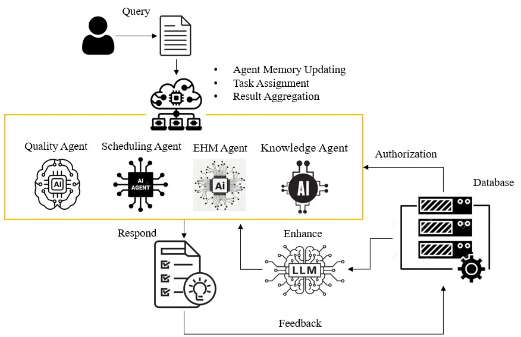

{{ p.title }}
{{ p.authorLine }}
{{ p.venue }}
{{ p.authorLine }}
{{ p.venue }}
本實驗室整合了製程控制理論、智能設備設計與 AI 技術，致力於解決現代製造業對高精度、高效率的挑戰。並進一步導入 AI Agent（智慧代理人）概念，將大型語言模型（LLM）、最佳化與工業知識（SOP／規範／設備參數）融合為可執行的決策單元，透過任務分解、工具調度、推理驗證與人機協作，實現從「被動分析」走向「主動決策支援」的閉環式智慧製造。我們透過與業界的緊密合作，將數位雙生、流程優化與多代理協作等研究成果導入真實場域，旨在成為先進控制與智慧製造的頂尖創新中心。
Our laboratory focuses on developing AI agent applications that integrate large language models, optimization methods, and industrial information systems to enable autonomous decision-making and collaborative problem solving. Our research encompasses agent architectures, multi-agent coordination, task planning, tool integration, and human–AI collaboration, with applications in intelligent scheduling, defect detection, predictive maintenance, and knowledge-based management using real-time data from MES, ERP, PLM, and IoT platforms.
實驗室歷年發表之期刊與研討會論文，可切換「清單模式」瀏覽完整內容，或透過「關聯圖」探索論文之間共享的研究方法、主題與技術。
Journal and conference publications from our lab. Switch to List Mode for the full view, or Graph View to explore how research fields co-occur across papers.
鄧志峰博士現任國立臺灣科技大學智慧製造科技研究所副教授，並獲國立交通大學工業工程與管理學博士學位。研究聚焦於整合大型語言模型、最佳化方法與工業資訊系統之 AI Agent 應用，涵蓋機器學習、深度學習、異常與缺陷偵測、設備健康監測與智慧排程。曾任職於台灣積體電路製造與戴樂格半導體，具備半導體製造資訊系統與巨量資料分析之產業實務經驗，致力於將工業領域知識轉化為可落地的自主決策系統。
Dr. Jr-Fong Dang is an Associate Professor at the Institute of Intelligent Manufacturing Technology, National Taiwan University of Science and Technology, and holds a Ph.D. in Industrial Engineering and Management from National Chiao Tung University. His research focuses on AI agent applications that integrate large language models, optimization methods and industrial information systems, spanning machine learning, deep learning, anomaly and defect detection, equipment health monitoring and intelligent scheduling. With prior industry experience at TSMC and Dialog Semiconductor in manufacturing information systems and big-data analytics, he translates domain knowledge into deployable autonomous decision-making systems.
本實驗室致力於發展結合大型語言模型（LLM）、最佳化方法與工業資訊系統之 AI Agent 應用，以實現自主決策與協作式問題求解。研究涵蓋 Agent 架構、多 Agent 協作、任務規劃、工具整合與人機協作，並運用 MES、ERP、PLM 與 IoT 平台之即時資料，應用於智慧排程、缺陷偵測、預測性維護與知識管理。
Our laboratory focuses on developing AI agent applications that integrate large language models (LLMs), optimization methods, and industrial information systems to enable autonomous decision-making and collaborative problem solving. Our research encompasses agent architectures, multi-agent coordination, task planning, tool integration, and human–AI collaboration, with applications in intelligent scheduling, defect detection, predictive maintenance, and knowledge-based management using real-time data from MES, ERP, PLM, and IoT platforms.

{{ p.authorLine }}
{{ p.venue }}
實驗室現有博士班與碩士班研究生，研究方向涵蓋影像識別、深度學習、智慧製造與 AI Agent。
Our doctoral and master’s students work across image recognition, deep learning, smart manufacturing and AI agents.
此學年尚無成員。No members for this class year yet.
無論是研究合作、產學交流，或是想加入實驗室，歡迎與我們聯繫。
Whether it is research collaboration, industry partnership, or joining the lab, feel free to reach out.
235307 新北市中和區工專路111號 臺灣科技大學 華夏校區教學大樓 2 樓 C219
General Education Building 2F C219, No. 111, Gongzhuan Rd., Zhonghe Dist., New Taipei City 235307, Taiwan